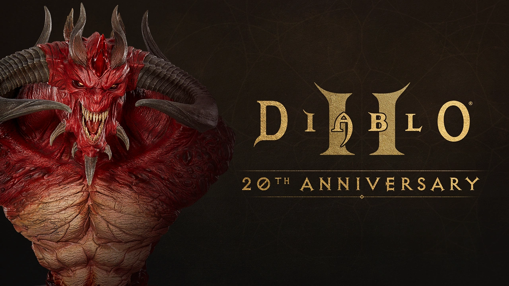

暗黑破坏神2 --- 第一章 总论
暗黑破坏神2 — 第一章 总论

1.1 概述
1.1.1 游戏难度
D2R 沿袭了原版《暗黑破坏神2》的经典难度设定，共有三个主要的难度等级，玩家需要逐步解锁：
- 普通（Normal）
- 噩梦（Nightmare）
- 地狱（Hell）
三个难度的特点及解锁方式
-
普通（Normal）
- 特点： 这是游戏的起始难度。怪物相对较弱，生命值、伤害、抗性都较低。死亡不会损失经验值。掉落的物品通常是普通、魔法或稀有品质，且以基础装备和魔法属性为主；
- 解锁方式： 游戏开始即可选择；
- 通关奖励： 击败普通难度的巴尔（Baal），可以解锁噩梦难度；
-
噩梦（Nightmare）
- 特点： 难度显著提升。怪物生命值、伤害、命中率、防御和抗性大幅增加。普通怪物开始出现元素免疫，精英和独特怪物会获得额外的随机词缀（例如“魔法免疫”、“快速”等），使其更难对付。死亡会损失经验值。掉落的物品品质更好，开始有几率掉落“扩展级（Exceptional）”和一些“精英级（Elite）”的物品，以及更高级的符文和独特物品；
- 解锁方式： 必须通关普通难度（击败普通难度的巴尔）；
- 通关奖励： 击败噩梦难度的巴尔，可以解锁地狱难度；
-
地狱（Hell）
- 特点： 终极难度，极具挑战性。所有怪物的生命值、伤害、命中率、防御和抗性都达到最高水平。几乎所有怪物都会出现至少一种元素免疫，许多精英和独特怪物拥有双重甚至三重免疫，需要玩家有针对性的Build或团队配合。死亡损失经验值更多。掉落的物品品质最佳，大量掉落“精英级（Elite）”物品，是获取高级符文、完美宝石、顶级独特和套装物品的主要来源；
- 解锁方式： 必须通关噩梦难度（击败噩梦难度的巴尔）；
对地图和怪物等级的影响
难度等级直接决定了游戏中各个区域的基础怪物等级（Monster Level, mlvl），这又进一步影响了怪物的基础属性（生命值、伤害、防御等）和物品掉落的品质（Item Level, ilvl）。
通常来说，怪物等级与区域等级（Area Level, alvl）紧密相关。在噩梦和地狱难度下，大多数普通怪物和区域的怪物等级会随之提升。
以下是大致的怪物等级范围：
-
普通难度：
- 怪物等级通常从Act 1的1级左右逐渐提升，到Act 5的巴尔（Baal）在43级左右；
- 在这个难度下，普通怪物的等级通常是“玩家等级+2”，最高可达45级。勇士怪物是“玩家等级+4”，最高47级。精英怪物是“玩家等级+5”，最高48级；
- 这个难度主要用于剧情推进和角色初期成长；
-
噩梦难度：
- 怪物等级从Act 1的36级左右开始，到Act 5的巴尔在66级左右；
- 普通怪物最高可达71级，勇士最高73级，精英最高74级；
- 这是玩家角色在中期提升等级和获取“扩展级”装备的主要阶段；
-
地狱难度：
- 怪物等级从Act 1的67级左右开始，到Act 5的巴尔在85级左右；
- 普通怪物最高可达96级，勇士最高98级，精英最高99级；
- 需要特别注意的是，在地狱难度下，很多区域的怪物等级上限是85级（例如混沌庇护所Chaos Sanctuary、世界之石大殿Worldstone Keep、牛场Cow Level等），这些区域被称为“85级场景”，是刷取顶级装备的主要地点，因为它们能掉落游戏中的最高级别物品；
- 巴尔本体及其仆从的等级最高可达99级，是游戏中最难对付的敌人之一；
总结一下，难度越高，怪物等级越高，其属性越强，掉落的物品等级也越高，能够掉落更稀有、更强大的装备。 同时，怪物获得的免疫和特殊能力也会越多，对玩家的Build和操作提出了更高的要求。
物品的等级系统
一、物品稀有度（Rarity）及颜色划分
D2R中的物品稀有度通过文字颜色来区分，这是《暗黑破坏神》系列的一大特色。不同颜色的物品拥有不同的属性生成机制和稀有程度。
-
- 白色（White） - 普通物品 (Normal)
- 特点： 物品名称为白色。没有任何魔法属性，只有基础属性（如武器伤害、盔甲防御）；
- 用途： 主要用于制作符文之语（Runewords），因为符文之语只能在白色（或灰色带孔）物品上制作。也可用于赫拉迪克方块配方，或作为低级角色的过渡装备；
- 稀有度： 最常见；
-
灰色（Gray） - 无形物品 (Ethereal) 或 已镶嵌物品 (Socketed)
- 特点： 物品名称为灰色；
- 如果是无形物品，其耐久度为零且无法修复（除非是带“无法破坏”属性的独特物品或符文之语），但物理伤害或防御会提升50%。通常用于佣兵装备或具有“无法破坏”属性的符文之语；
- 如果是有孔物品（未镶嵌任何宝石、符文、珠宝），则显示为灰色。一旦镶嵌，颜色会根据镶嵌物改变，或回到基础颜色；
- 稀有度： 常见；
- 其他： 白色物品，没有孔洞，但可以通过打孔任务或方块配方获得孔洞。灰色物品一定带有孔洞（即便孔洞数量为0，也是因为它是无形物品，且不可修复），或者它是无形物品（即使没有孔洞，也因其无形属性而显示为灰色）。对于制作符文之语，无论是直接掉落的自带孔的灰色物品，还是由白色物品打孔后变成的灰色物品，只要孔数和物品类型符合要求，都可以作为底材；
- 特点： 物品名称为灰色；
-
蓝色（Blue） - 魔法物品 (Magic)
- 特点： 物品名称为蓝色。拥有1-2条随机的魔法属性（词缀），包括前缀（Prefix）和后缀（Suffix）；
- 用途： 有些蓝色物品可能非常强大，尤其是一些特定的“神蓝色”（如+3技能的蓝色项链/头环，或特定词缀组合的蓝色武器/盾牌）。它们也常用于赫拉迪克方块的合成配方；
- 稀有度： 常见；
-
黄色（Yellow） - 稀有物品 (Rare)
- 特点： 物品名称为黄色。拥有3-6条随机的魔法属性（词缀），比蓝色物品的词缀数量更多，潜力也更大；
- 用途： 许多顶级的角色装备可能是高roll的稀有物品，尤其是在独特和套装物品没有完美替代品的情况下（例如，某些戒指、项链、手套、头盔等）。
- 稀有度： 较稀有。
-
橙色（Orange） - 合成物品 (Crafted)
- 特点： 物品名称为橙色。通过赫拉迪克方块的特定合成配方制作的物品。它们结合了蓝色和黄色物品的特点，拥有固定的一些属性（取决于配方）和一些随机生成的属性。
- 用途： 某些合成物品在特定Build中非常强大，例如吸血手套、击退手套、高施法速度项链等。
- 稀有度： 根据配方材料和随机属性的roll决定，通常需要大量投入才能制作出极品。
-
绿色（Green） - 套装物品 (Set)
- 特点： 物品名称为绿色。拥有预设的固定属性，且属于某个特定的套装。当玩家装备同套装的多件物品时，会激活额外的套装奖励属性，件数越多，奖励越强大。
- 用途： 套装物品为玩家提供了明确的装备路线，尤其对新手或特定Build来说非常有用。有些套装是顶级的，如塔拉夏的法袍套装。
- 稀有度： 稀有。
-
金色（Gold） - 独特物品 (Unique)
- 特点： 物品名称为金色。拥有预设的固定属性，通常比同等级的其他物品更强大，且名称是唯一的（例如，暗金色的“安达利尔的面貌”、“泰瑞尔的力量”等）。一个物品只会有一个独特版本。
- 用途： 独特物品是游戏中最具标志性的装备之一，许多毕业装备都是独特物品。它们的属性往往是独一无二的，或具有非常高的数值。
- 稀有度： 最稀有。
二、物品基础类型（Base Item Types）的划分
在D2R中，每种物品都有其基础类型，而这些基础类型又分为三个等级：
-
普通级（Normal）：
- 这是最基础的物品类型，通常在游戏早期，尤其是在普通难度下掉落；
- 它们的属性（例如武器的伤害，盔甲的防御）相对较低，对力量和敏捷的要求也最低；
- 例子：Short Sword（短剑）、Leather Armor（皮甲）、Tower Shield（塔盾）等；
- 这些物品通常在普通难度下可以找到，在噩梦和地狱难度也可能掉落；
-
扩展级（Exceptional）：
- 这是普通级物品的升级版本，通常在噩梦难度开始大量掉落，在普通难度后期也可能出现；
- 它们的属性比普通级更高，但对力量和敏捷的要求也更高；
- 名字会改变，但外观通常与对应的普通级物品相同；
- 例子：Gladius（短剑的扩展版）、Serpentskin Armor（皮甲的扩展版）、Spiked Shield（塔盾的扩展版）等；
- 玩家可以通过赫拉迪克方块（Horadric Cube）的配方将普通级物品升级为扩展级（例如，普通独特或套装物品）；
-
精英级（Elite）：
- 这是最高等级的物品基础类型，通常在地狱难度开始大量掉落，在噩梦难度后期也可能出现；
- 它们的属性是所有基础类型中最高的，对力量和敏捷的要求也是最高的，往往需要角色达到较高等级才能使用；
- 同样，名字会改变，但外观通常与对应的普通级和扩展级物品相同；
- 例子：Falcata（短剑的精英版）、Wyrmhide（皮甲的精英版）、Aegis（塔盾的精英版）等。
- 玩家同样可以通过赫拉迪克方块将扩展级物品升级为精英级（例如，扩展级独特或套装物品）；
为什么要区分这三级？
这三级基础类型构成了物品强度的基石。一个顶级独特物品（Unique Item）或符文之语（Runeword）的最终强度，很大程度上取决于其所基于的精英级基础物品，因为精英级基础物品提供了最高的武器伤害或盔甲防御。例如，一把“精神（Spirit）”符文之语剑，如果制作在“水晶剑（Crystal Sword）”上（普通级），其伤害会远低于制作在“相位之刃（Phase Blade）”上（精英级）。
三、魔法寻获率（Magic Find, MF）的影响
“更好的魔法物品掉落几率”（Better Chance of Getting Magic Items），俗称 Magic Find (MF)，是一种角色属性，它可以增加怪物掉落更高稀有度（蓝色、黄色、绿色、金色）物品的几率。
-
MF的作用机制： 当怪物掉落物品时，游戏会首先决定掉落何种基础物品（例如，是否掉落一把剑，掉落哪种剑）。然后，系统会根据你的MF值，尝试将这把剑升级到更高稀有度：
- 先尝试 Unique（独特）
- 如果失败，尝试 Set（套装）
- 如果失败，尝试 Rare（稀有）
- 如果失败，尝试 Magic（魔法）
- 如果以上都失败，则掉落为 White/Gray（普通/有孔）。
-
递减效应： MF值对不同稀有度的物品有不同的“递减效应”（Diminishing Returns）。MF越高，对独特和套装物品的提升效果递减越明显，但对魔法和稀有物品的提升效果相对较好。
-
不影响： MF不影响物品的数量掉落，也不影响符文（Runes）和宝石（Gems）的掉落几率，因为符文和宝石不被视为“魔法物品”。
1.2 任务流程
1.2.1 Act 1 黑暗的开端 (Act I: The Sightless Eye)
邪恶洞穴 Den Of Evil
- 任务地点：Blood Moor
- 任务要求：消灭洞内所有怪物
- 任务来源：Akara
- 任务报酬：一点技能值
这是整个游戏的第一个任务，也是最简单的一个。任务可以从 Akara 那获得，或是当你进入 Den of Evil 时自动获得。只要把 Den of Evil 里的所有怪物全部消灭就完成任务了，之后会有几缕阳光射进来。里面的怪物大都很好对付，需要注意的就是先把那些会召唤的怪物消灭掉。否则够你麻烦一阵子的。 完成任务后回村与 Akara 交谈，就会给你一点技能值作为回报。
提示：当洞内怪物少于 5 个时，可以按 Q 键查看洞内所 剩怪物数。
埋骨之地 Sister’s Burial Grounds
- 任务地点：Burial Grounds
- 任务要求：杀掉 Blood Raven
- 任务来源：Kashya
- 任务报酬：一个免费庸兵，并且之后可以雇佣庸兵
从 Blood Moor 经过 Cold Plains 就来到了 Burial Grounds。里面有很多的僵尸和骷髅，而且 Blood Raven 还会不断的放出新僵尸。Blood Raven 的行动速度极快，并且周围通常会有大量的僵尸和骷髅，而她就在后面放箭和施魔法。当你干掉 Blood Raven 时，她会放出很漂亮的效果，并且所有的僵尸和骷髅都会死掉。
墓地里还有两个洞穴，虽然和任务没有关系，但里面会有不少好的装备，建议大家去转转。而完成这个任务后 Kashya 会给你一个免费的雇庸兵，并且可以开始雇佣，但最多只能雇佣一个！
提示：建议大家直接去干掉 Blood Raven ，不要理会周围的僵尸。不过利用她不断放出的僵尸升级也是一个不错的办法。：）同时得到的免费雇佣兵将会对你的初期游戏过程大有帮助。
寻找凯恩The Search For Cain
- 任务地点：Dark Wood / Tristram
- 任务要求 ：救回 Cain
- 任务来源：Akara
- 任务报酬：Cain 会帮你 免费鉴定物品，而且会提供很多任务情报给你。一个戒指。
这个任务比较复杂，首先你要找到在 Dark Wood 中的一棵树 Tree Of Inifuss，然后按一下，它会掉下一个 卷轴 Scroll of inifuss。把卷轴拿到 Akara 那，她会給你解释开启纪念石门通道的正确顺序，然后按照卷轴上标明的顺序去开启 Stony Field 中的那五个石柱，这时会产生一个红色时空门，进入 后就来到了 Tristram。你要在那里救回 Deckard Cain。里面有很多蓝色的怪物和一个金色的怪物，特别是那个金色的，很难对付， 大家要小心了！在救了 Deckard Cain 后他会自己开一个回到村庄 的时空门，之后就会免费为你鉴定物品了。
提示：这里会有一个小插曲，在里面会看到一代中的卖武器的瘸腿小男孩怀特 躺在地上，跟他说话后，他就会死去。但会给你留下很多金币和一个 Wirt’s leg，钱倒是小事，关键是这个 Wirt’s leg，它可是进入 COW LVL 的关键，一定要拿到！
遗忘之塔 Forgotten Tower
- 任务地点：Black Marsh / Tower Cellar
- 任务要求：杀掉女伯爵
- 任务来源：Stony Field 里的一本古书
- 任务报酬： 很多金币，会掉落符文，一般是8号以内
这个任务是通过读 Stony Field 里的一本古书得到的。之后，你会找到一座倒塌了的石塔，里面有有个入口。 里面一共有五层；每一层里都有很多强力的怪物，当你击败在最后 一层的 The Countess 后，任务就算完成了。打开宝箱，会得到很多金币。
提示：这里是个练级的好地方，因为 1.10 版的特性，一般在这里可以练到 18 级左右再进行后面的游戏！
铁匠的武器 Tools Of Trade
- 任务地点：修道院 / Barracks
- 任务要求：找到 Horadric Malus
- 任务来源：Charsi
- 任务报酬：为您免费升級一件装备
在 BLACK MARSH 继续往前走，会来到 TAMOE HIGHLAND，往里走，会经过一个花园样的地方，在往前走，就来到 了 Barracks。在这里你会碰到很多蓝色的怪物，而且经常是两三个一起，还带着很多小怪物，相当的难打，一定要小心。多找找你就会看到放着 Horadric Malus 的架子（在地图上也会有明显的标志），旁边会有一个很像一代中屠夫样的金色怪物守着。拿到物 品后，回去交给 Charsi ，她就会帮你把一件白色装备转化为杰出装备。 提示：这里先别急着转化（也称打造）装备，可 以等到了后面的场景得到好的装备后再转化。一般经常选择用来打造的装备是头冠类。
墓穴的最底层 Sister Of Slaughter
- 任务地点：修道院 / Catacombs
- 任务要求：杀掉 Andariel
- 任务来源：Deckard Cain
- 任务报酬：通过 ACT I
这是 ACT I 中的最后一个任务，首先在 Barracks 里好到 Iail 的入口，这里可以说是一个过渡场景，一 共三层，通往 Inner Cloister。从这里穿过Cathedral，就可以来到最终的场景 Catacombs 了。Catacombs一共是四层，在最后一层就可以碰到大魔女 Andariel 了。Andariel 拥有很很强的近身攻 击能力和毒系攻击，有些棘手。多买点解毒药水会有很大的帮助。 或者使用带有快速解毒属性的装备。干掉她后，回去和各个 NPC 说话后，就可以在 Warriv 的带领下，前往 ACT II 了…
Andariel 首杀 bug
需要过第一幕最后一个任务的角色独自就能完成，前提是这个角色能打得过安达利尔。具体操作如下：
- 角色或大号带着击杀安达利尔；
- 直接开回城卷轴，回到城里跟瓦瑞夫（穿蓝色衣服的NPC）对话，选择“向东走”前往第二幕鲁高因；
- 首杀BUG卡成功，刚才过任务的角色以后每次击杀都被系统判定为首杀；
1.2.2 Act II 鲁·高因的秘密 (Act II: The Secret of the Vizjerei)
Radament’Lair
- 任务地点：Sewers
- 任务要求：除掉 Radament
- 任务来源：Atma
- 任务报酬：Book of Skill
此任务首先是让你在 Lut Gholein 里找到 Radament 的所在。顺着城镇的边上走，可以看到一个洞穴的入口，那就是 Sewers（或是在传送点旁边的入口处进入）。里面一共是三层，没有什麽比较难对付的怪物，只是注意一下不要被敌人给围住，那样会很危险。在第三层，就可以发现 Radament，这时的任务变成了 Kill Radament !没办法，照做吧！很容易对付，两下就把它搞定了。打死后可以得到 Book of Skill（加一点技能值）算是报酬。回村找 Atma 交差，这个任务就算是完成了。 提示：在洞穴里还可以找到 Horadric Scroll，把它交给 Cain 后，会得到下一个任务。同时，进入时应该选择城镇下面的入口，那里离第二层比较近。
The Horadric Staff
- 任务地点：Dry Hills ,Far Oasis ,Lost City
- 任务要求：收集 Horadric Staff
- 任务来源：Cain
- 任务报酬：得到 Horadric cube
这个任务是所有任务中最长的，也是最有难度的。你必须找到 Horadric Cube , Horadric Staff 及 Viper Amulet，而这三个东西又分别在三个不同的区域中，所以必须要有一定的耐心。Horadric Cube 可以在 Dry Hills 里的 Halls of the Dead 的第三层找到；Horadric Shaft 在 Far Oasis 里的 Sand Maggot 的第三层找到；而 Viper Amulet 则可以在 Lost City 中的 Valley of the Snakes / Claw Viper Temple 中找到。
分别鉴定后将 Horadric Shaft 和 Viper Amulet 放入到 Horadric Cube 中转换成 Horadric Staff，这个任务也就算是完成了。
提示：其中的任务道具千万不要丢失或是转化为别的装备，否则将无法完成 ACT 2 的最后一个任务，游戏将被卡死！！
被污染的太阳 Tainted Sun
- 任务地点：Lost City
- 任务要求：捣毁 Tainted Sun Altar
- 任务来源：进入 Lost City
- 任务报酬：Viper Amulet
这个任务其实是上一个任务中的一个子任务，只要你完成了上个任务，也就代表着完成了这个任务。当你在上个任务中拿到 Horadric Staff 后，会发现场景变的一片漆黑！这时只要你进入到 Lost City 这个地区后，就会得到此任务，回城和 Drognan 对话后得知：原来 Lost City 的阳光被邪恶所笼罩，必需把 Valley of Snakes 中 Tainted Sun 毁掉后才能恢复原状！在 Viper Template 最底层可以发现那个 Tainted Sun Altar，毁掉后得到 Viper Amulet。回城同 NPC 对话后变可完成任务。
The Arcane Sanctuary
- 任务地点：Palace
- 任务要求：进入 Arcane Sanctuary
- 任务来源：Atma
- 任务报酬：
在 Atma 的那得到了这个任务，得知要立即赶往皇宫，和门卫交谈后，就可以进入到皇宫。皇宫里面比较简单，一层一层往下走就行了，地图也不大，在最底层可以发现一个时空门，进入后来到了 Arcane Sanctuary！这时的场景猛然变成了另一种景象，让人为之一振，发现这地方就是外太空。此时任务也变成了 Find Horazin’Journal。通过一翻搜索就能找到，翻开它，这时候旁边会出现一道红色的门，任务也就完成了！提示：里面的魔法师和飞鸟实在是太强了，进去后最好先把传送点找到，免的死后要从头再走一次！不完成此任务将无法进入下个地区。
The Summoner
- 任务地点：Arcane Sanctuary
- 任务要求：杀掉 Summoner
- 任务来源：遇到 Summoner
- 任务报酬：开启时空门
当你在 Arcane Sanctuary 中探索时，就会遇到 Summoner,这是任务也就出现：杀掉 Summoner ！！没有什麽可说的，干掉她就行了。回城后同 Atma 交谈后就完成了任务，同时会出现一个通往最后一个区域 Canyon of the Magi 的时空门。
The Seven Tombs
- 任务地点：Canyon of the Magi
- 任务要求：杀掉 Duriel
- 任务来源：Jerhyn
- 任务报酬：通过 ACT II
在 Canyon of the Magi 中你会发现有7个 Tal Rasha’s Tomb 洞穴，而且似乎每个都是一样的，但只有一个能到达 Tal Rasha’s Chamber ！！这时按 Q 键打开任务栏，发现有一个图标，在注意看一下每个洞口前石柱上的标志，就会发现只有一个是同任务栏里的标志是相同的，说明这就是真的 Tal Rasha’s Tomb ！！在最深处可以发现一个祭台 Horadric Orifice ！这时把在任务2中得到的那跟法杖放上去，就会出现一道门，里面就是 ACT II 的最终BOSS Duriel ！！打败他后就能救出大天使 Tyrael ！完成任务后 Meshif 会带你前往位于東方的 ACT III—Kurast ！！提示：Duriel 是一个非常难缠的对手，行动速度快，还会把你冰冻住，而且里面的空间非常的有限！所以切记进去后先放一个时空门！如果要通过别人的时空门直接进入 Tal Rasha’s Chamber ，那么需要先和 Cain 说话。
1.2.3 Act III 库拉斯特的遗产 (Act III: The Infernal Gate)
The Golden Bird
- 任务地点：任何地区
- 任务要求：找到 Jade Figurine
- 任务来源：拾到的 Jade Figurine
- 任务报酬：Potion Of Life
此场景开始时没有给任何的任务提示。老样子，还是先到处去和NPC说说话，熟悉一下。但还是没有提示，没办法，只好出城了。在 Spider Forest 会遇到一只金色的怪物（也可能在别的场景，而且怪物种类不确定），干掉后会掉下一个金色的物品 Jade Figurine，这时任务出现了：回到城中跟 Cain 对话，他让你把东西交给 Meshif ，而当你把东西交给 Meshif 后，他会给你一个 Golden Bird 作为交换。再把东西交给 Alkor ，会得到 Potion Of Life 作为本任务的报酬，作用是增加 20 点最大生命值。提示：任务地点和黄金怪物都是随机的。
Blade Of The Old Religion
- 任务地点：Flayer Jungle
- 任务要求：把 Gidbinn 交給 Ormus
- 任务来源：Hratli
- 任务报酬：亮金戒指
当你完成第一个任务后，去找 Hratli ，他会给你第二个任务：找到 Gidbinn 。先穿过 Great Marsh，来到 Flayer Jungle。跟第一个任务一样，你会在地图上一个类似剑状的标志的地方发现一个火炉，把它点着后会出片一批怪物，杀死后就可以得到 Gidbinn，然后回去交给 Ormus，他会给你一个戒指作为回报。 提示：Flayer Jungle 的地图实在是太大了，大家一定要仔细的找。而且不要放过里面的洞穴，在那里可以找到很多以后要用到的东西。
Khalim’s Will
- 任务地点：Spider Crvern, Flayer Jungle, Sewers, Travincal
- 任务要求：找到 Khalim’s Eyes, Brain, Heart 和 Flail，再用 Horadric Cube 合成 Khalim’s Will
- 任务来源：Deckard Cain
- 任务报酬：
看到这个任务的地点了吗？要完成这个任务差不多要把 ACT III 的所有地区都要跑一遍。而这个任务又是必需完成的，所以兄弟们，来吧！：）
先给大家说一下这个任务的大概情况：找到四件东西，然后合成一件装备，用它来打开通往前方的道路。听起来容易，做起来难呀！首先要在 Spider Forest 內找到 Spider Crvern，在里面找到 Khalim’s Eyes．再到 Flayer Jungle 找到 Flayer Dungeon，里面有 Khalim’s Brain．再到 Kurast Bazzar 找到 Sewers，里面有 Khalim’s Heart．最后到 Travincal ，打死一个金色名字的怪物就会得到 Khalim’s Flail．然后用 Horadric Cube 合成 Khalim’s Will ！装备上去把祭台 COMPELLING ORB 敲碎就完成任务了。
提示：在最后金色怪物那会有很多的魔法师，不要急于前进，逐个击破是不错的办法！而那也会有一个传送点，最好先踩通！此处有个捷径，杀死全部的议员后，就可以通过其他玩家的时空门直接进入下面的地区，而不用寻找那些任务道具。
Lam Esen’s Tome
- 任务地点：在 Upper Kurast 中的神庙内
- 任务要求：找到 Lam Esen’s Tome
- 任务来源：Alkor
- 任务报酬：得到五点属性
这个任务比较简单：找到 Lower Kurast 后，回去和 Alkor 对话．他会叫你找一本 “Lam Esen’s Tome” 的书．去到 Bazzar, Upper Kurast 和 Causeway 中，你可以找到六个不同的入口．只要到每个里找一找，就会在其中一个找到 Lam Esen’s Tome．每个 Temple 都不大．用心找找便成。
The Blacken Temple
- 任务地点：Travincal
- 任务要求：找到 Blacken Temple, 杀掉 High Council
- 任务来源：Ormus
- 任务报酬：
这其实又是一个凑数的任务，掺在任务 III 中间，只要你把它完成了，这个任务自然也是完成了！提示：不用说了，很简单。杀死全部议员。
The Guardian
- 任务地点：Durance Of Hate
- 任务要求：杀掉 Mephisto
- 任务来源：Ormus
- 任务报酬：Mephisto’s Soulstone
当你进入到 Travincal 後后，使用在任务 III 中得到的 Khalim’s Will 打碎 Compelling Orb，进入 Durance Of Hate。 Mephisto 就在第三层的深处等著你．杀掉 Mephisto 后会得到 Mephisto’s Soulstone，进入开启的紅色的 Portal 就可以到达 Act IV ! 提示：Mephisto 是个擅长使用魔法的 BOSS，打它时最好把所有的放御提升的高一些，那样比较容易些，而且别忘了象前面一样，放个时空门！：）
1.2.4 Act IV
The Fallen Angel
- 任务地点：Plains Of Despair
- 任务要求：消灭 Izual
- 任务来源：Tyrael
- 任务报酬：2 点 Skill Point
首先在一个很酷的NPC Tyrael 那得到任务：解放堕落天使 Izual 的灵魂（其实就是杀了它）！好办，只要从 Outter steppes 到 Plains Of Despair 转转就能找到它，轻松的把它搞定后，回去交差，Tyrael 会给你两点技能值。这里给大家介绍一下 Izual ：Izual 原本是天使之一，但因为被 Diablo 利用而堕落成恶魔．也是他提出使用 Soulstone 来控制 Diablo 和他兄弟的灵魂．其实一切也是他的阴谋，他教 Diablo 破解 Soulstone 封印的辦法，而使 Diablo 即使被消灭多少次，也可以利用 Soulstone 的力量永远地复活下去…
1.2.5 Act V
1.2.6 引用
1.3 天梯赛季
天梯赛季是《暗黑破坏神2：重制版》中的一种游戏模式，它为玩家提供了一个周期性的全新开始和竞争环境。
- 全新开始： 每个天梯赛季开始时，所有玩家都需要创建新的角色，从 1 级开始，重新收集装备和提升等级。 这创造了一个公平的竞争环境，让所有玩家站在同一起跑线上；
- 专属内容： 赛季可能会包含一些非赛季模式中没有的专属内容，例如新的符文之语、新的装备、新的配方等；
- 排行榜竞争： 玩家可以在天梯排行榜上竞争，比较谁的等级更高、谁的进度更快。 这为游戏增加了一定的挑战性和乐趣；
- 赛季奖励： 参与天梯赛季并达到一定成就的玩家，通常会获得一些奖励，例如独特的装饰品、头像等；
- 赛季结束： 当一个天梯赛季结束后，所有赛季角色会转化为非赛季角色，他们的装备和等级会保留下来，但无法再参与新的天梯赛季；
《暗黑破坏神2：重制版》的天梯赛季时长并不是固定的，暴雪会根据情况调整。
- 一般来说，一个赛季的平均时长约为3个月；
- 但也有可能出现更长或更短的赛季，暴雪通常会在赛季即将结束时提前公布下一个赛季的开始时间；